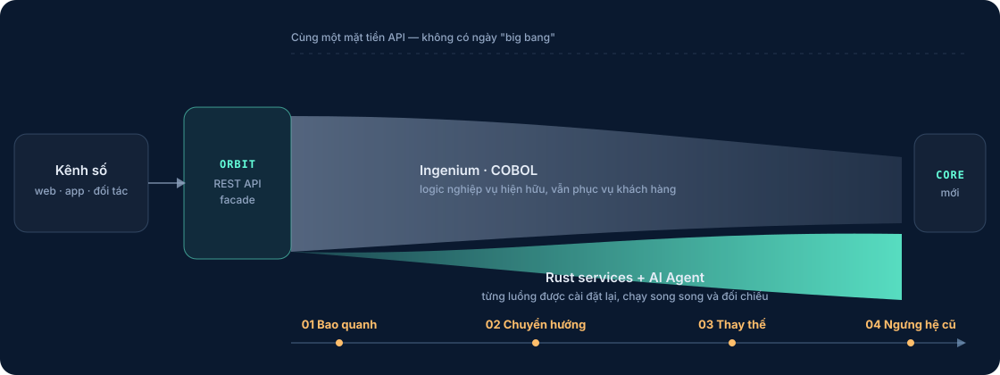

Chi phí nền tảng leo thang
AIX, IBM MQ và WebSphere là giấy phép độc quyền, chi phí bảo trì tăng đều mỗi năm trong khi năng lực không đổi.
Trang đang trong quá trình hoàn thiện. Nội dung và lộ trình sản phẩm sẽ tiếp tục được cập nhật.
Liên hệ qua emailDành cho doanh nghiệp bảo hiểm đang vận hành Ingenium · COBOL · AIX · IBM MQ
BENOVA – Hệ sinh thái core bảo hiểm thế hệ mới, cho phép bạn di cư từ hệ thống cũ sang nền tảng Cloud-native hiện đại mà không ngừng vận hành.
Giữ nguyên logic nghiệp vụ · Không đụng tới giấy phép Ingenium · Triển khai cloud, on-prem hoặc hybrid
Được chứng minh trên một chương trình di cư thật
Vấn đề & Giải pháp
Ingenium vẫn chạy đúng nghiệp vụ sau hàng chục năm. Nhưng chi phí vận hành, tốc độ ra tính năng và nguồn nhân lực xung quanh nó thì không còn bền vững.
AIX, IBM MQ và WebSphere là giấy phép độc quyền, chi phí bảo trì tăng đều mỗi năm trong khi năng lực không đổi.
Lớp kỹ sư am hiểu COBOL đang nghỉ hưu dần. Tuyển mới gần như bất khả thi, đào tạo lại thì tốn nhiều năm.
Biên dịch hàng giờ, triển khai thủ công, không có REST API — mỗi kênh số hay đối tác mới đều cần middleware chắp vá.
Môi trường DEV/SIT/UAT trôi dạt khỏi PRD theo thời gian, sinh ra lỗi "chạy ở đây, hỏng ở kia" và lỗ hổng kiểm toán.
Chiến lược
Thay vì "rip and replace" nhiều năm với rủi ro rất cao, BENOVA bao quanh Ingenium và siết dần từng luồng nghiệp vụ: luồng mới chạy trên Rust và AI, luồng cũ vẫn phục vụ khách hàng. Khi một luồng đã ổn định trên nền tảng mới, phần COBOL tương ứng được ngưng sử dụng.
Xem cách hệ sinh thái thực thi điều nàyOrbit đứng trước Ingenium, phơi bày core dưới dạng REST API mà không sửa một dòng COBOL nào.
Basal điều hướng từng luồng nghiệp vụ: luồng đã hiện đại hóa đi vào Rust/AI, phần còn lại vẫn đi vào Ingenium.
Từng Task được cài đặt lại bằng Rust hoặc giao cho AI Agent, chạy song song và đối chiếu kết quả với hệ cũ.
Khi mọi luồng đã đi qua nền tảng mới, phần COBOL tương ứng được cho nghỉ. Không có ngày "big bang".

Hệ sinh thái lõi
BENOVA = B + ENOVA. B là Binean, công ty đứng sau nền tảng. ENOVA là năm thành tố: Engine điều phối, Nexus vận hành, Orbit mở core, Vista trải nghiệm và AI Agent tăng tốc. Mỗi thành tố giải quyết một tầng của bài toán hiện đại hóa và triển khai được độc lập, theo thứ tự phù hợp với bạn.
Framework điều phối
Bộ khung điều phối của toàn hệ sinh thái, hợp thành từ nhiều project độc lập. Nhân điều phối là Spine: Flow định nghĩa quy trình, mỗi lần chạy là một Process, và Process sinh ra Task để giao cho Agent thực thi. Spine cố tình không phân loại Agent — cùng một điểm nối có thể là con người, một service, hay một AI Agent.
Model workflow event-driven của Binean Engine. Flow là định nghĩa quy trình bất biến và có version, Process là một lần chạy, Task là một đơn vị công việc. Đặc tả được viết trước, còn implementation và conformance test tồn tại để chứng minh đặc tả đúng.
Không phải bộ định tuyến thụ động: Basal là bên duy nhất có thẩm quyền điều hướng, và là bên chủ động chạy vòng lặp xử lý. Nó sở hữu vòng đời Process, chuyển trạng thái Task, điều kiện hội tụ nhánh và cơ chế phục hồi.
Agent có sẵn trong lõi, lo phần việc máy móc của mỗi Flow: nhánh rẽ do compiler sinh ra, biến đổi dữ liệu bằng script, và gọi một Flow khác như một Skill để tạo process con.
Project riêng trong Binean Engine, đang phát triển, lo lịch trình và giám sát timeout. Mục tiêu: không Task nào bị treo im lặng — quá hạn là có sự kiện, có đền bù, có cảnh báo.
DevOps cho Ingenium
Bộ công cụ DevOps được xây riêng cho Ingenium, hoạt động ngay trong VS Code. Biến các thao tác thủ công đầy rủi ro thành pipeline chuẩn hóa và lặp lại được.
Hybrid Service Host
Nơi hệ cũ và hệ mới cùng sống. Orbit chạy song song service Rust mới và Ingenium cũ sau một mặt tiền API duy nhất — nền tảng kỹ thuật cho chiến lược Strangler Fig.
Flow & Task Management
Giao diện người dùng thiết kế theo flow chứ không theo màn hình. Người dùng kích hoạt flow, hệ thống sinh process, process sinh Task và phân cho Machine, Human hoặc AI.
Trí tuệ nhân tạo
AI không phải là một tính năng gắn thêm, mà là một loại Agent ngang hàng với người và máy. AI Agent nhận Task từ Spine đúng như mọi Agent khác — nên có thể bàn giao dần từng phần việc.
Lợi ích
Mỗi lợi ích dưới đây gắn với một thay đổi kỹ thuật cụ thể — không phải khẩu hiệu.
Các luồng nghiệp vụ nóng được viết lại bằng Rust: an toàn bộ nhớ theo thiết kế và nhanh hơn nhiều lần so với cài đặt COBOL tương ứng. Con số cụ thể phụ thuộc từng luồng và sẽ đo trên chính hệ thống của bạn trong POC.
Rustmục tiêu 10x ở luồng đã chuyển đổi, đo trong POC
Di cư từng bước theo Strangler Fig. Hệ thống đang chạy không bị phá vỡ, mỗi bước đều có cổng go/no-go và đường lùi rõ ràng.
0ngày "big bang" trong lộ trình
AI Agent đảm nhận các Task lặp lại và kiểm tra chéo kết quả, giảm sai sót thủ công và giải phóng đội ngũ cho phần việc cần phán đoán.
24/7xử lý không phụ thuộc ca trực
Đóng gói container, điều phối bằng Kubernetes, quan sát bằng công cụ chuẩn ngành. Chạy trên cloud, on-premise hay hybrid đều cùng một cách vận hành.
K8striển khai cloud, on-prem hoặc hybrid
Bạn giữ nguyên logic nghiệp vụ, dữ liệu và quyền sở hữu. BENOVA tích hợp với Ingenium chứ không thay thế giấy phép hay chỉnh sửa mã nguồn của nó.
100%quyền sở hữu nghiệp vụ thuộc về bạn
Bắt đầu bằng một POC có phạm vi rõ ràng trên chính một luồng nghiệp vụ Ingenium của bạn. Chứng minh cải thiện build-and-deploy trước, rồi mới quyết định đi xa tới đâu.
Hiện tại chúng tôi chỉ nhận liên hệ qua email. Trao đổi 30 phút, không ràng buộc.